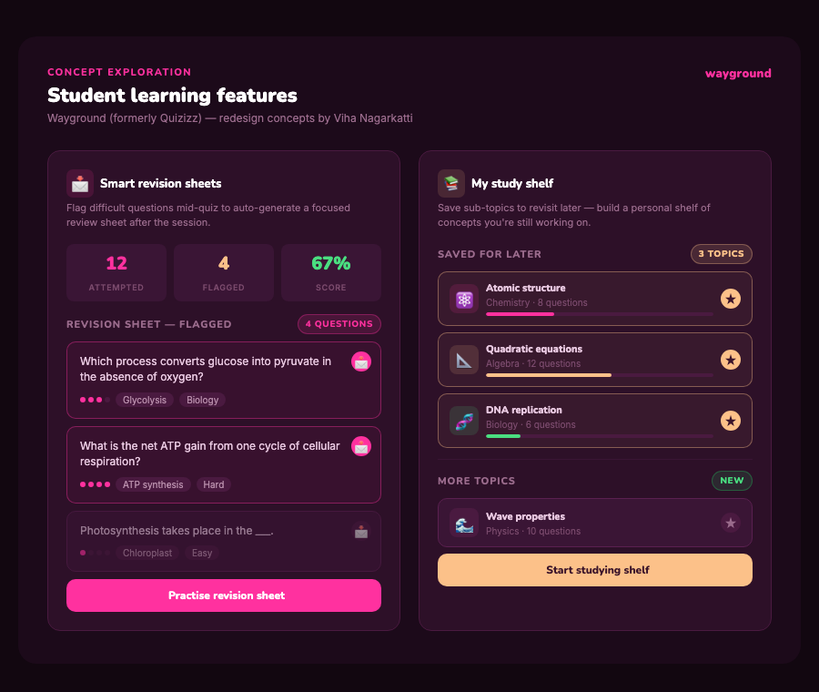
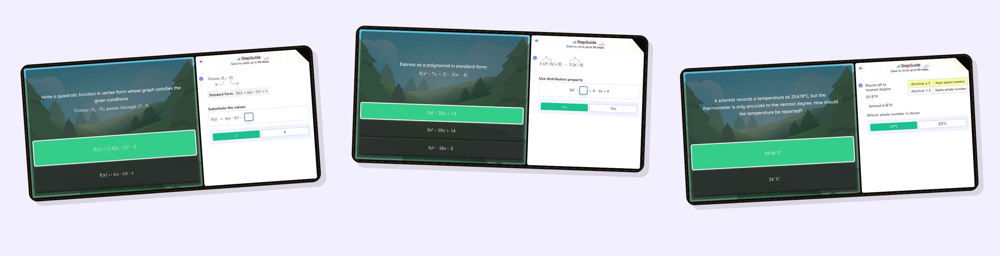

Consulted as an Instructional Designer at Wayground, an ed-tech platform used by millions of teachers and students worldwide. Applied UX research, design thinking, and instructional design principles to improve how learners engage with content on the platform, with K-12 students as the primary user group, designing for shorter attention spans, developing reading levels, and engagement that motivates without patronising.
About Wayground
Wayground (formerly Quizizz) is a game-based learning platform used by over 50 million teachers and students in 150+ countries. The platform blends gamification with content delivery to make learning engaging, and the design of that learning experience matters as much as the content itself.
Wayground (formerly Quizizz) · Instructional Designer Consultant · Aug – Dec 2025
Instructional design and UX design share the same fundamental question: how do people actually experience and process what we've built for them? In a learning platform, a poorly structured content flow isn't just frustrating. It actively undermines the transfer of knowledge. Cognitive overload, lack of clear progression, and misaligned feedback loops all produce the same outcome: learners disengage.
At Wayground, I brought a UX research lens to instructional design decisions, treating learner behaviour as data, and content structure as an interface to be designed and iterated on, not just written.
The added layer here: the primary end users were kids. Designing UX for a K-12 audience isn't just "the same principles, simpler UI"; it meant researching attention span limits, age-appropriate reading levels, and motivation patterns that look different from adult learners, then translating those findings into instructional decisions the content team could actually act on.
Before proposing any instructional frameworks, I studied how learners actually interacted with the platform, looking at where they dropped off, which content formats held attention, and what friction existed in the learning flow. That research surfaced two concepts I designed to give students more ownership over how they revisit material.
When students flag a question during a quiz, Wayground auto-compiles those questions into a focused revision sheet after the session. Rather than retaking an entire quiz, students review only the concepts they genuinely struggled with, organised by difficulty, topic tag, and wrong-answer pattern. A targeted, zero-friction way to close knowledge gaps.
A personal, persistent shelf where students can save specific sub-topics mid-quiz or from their results screen to revisit at a time that suits them. Each saved topic tracks progress, so students build a self-directed revision queue, not a teacher-assigned task list, that grows with their own pace and curiosity.

Concept exploration: smart revision sheets and my study shelf
Together, these features shift students from passive quiz-takers to active learners who self-identify gaps and return to them with intention, a meaningful improvement to retention and metacognitive awareness, especially in exam prep contexts.
Designed instructional frameworks that balanced established learning science principles (spaced repetition, retrieval practice, worked examples) with the practical constraints of a gamified platform, where engagement mechanics and learning outcomes can easily pull in opposite directions.
Structured content sequences with clear learning progressions, ensuring each unit built on prior knowledge, introduced challenge at the right gradient, and gave learners enough context before asking them to apply what they'd learned. Applied principles like the worked example effect and cognitive load theory to reduce unnecessary complexity in early stages.
Redesigned how learners received feedback on incorrect answers, moving from binary right/wrong to explanatory feedback that addressed the likely misconception behind the error. This is a known instructional intervention for improving long-term retention, not just in-session performance.
Ensured instructional content met accessibility standards, reviewing reading level, visual presentation, and content structure for learners with varying literacy and attention profiles. Flagged content that relied too heavily on visual-only cues or assumed prior knowledge that wasn't established in the sequence.

A sample of subtopics I broke down step-by-step: quadratic vertex form, polynomial simplification, rounding rules
Instructional frameworks created a reusable template for the content team, reducing the time to structure new content while improving consistency in pedagogical quality across modules.
Worked across both product and content teams, translating between two teams who often speak different languages: product teams thinking in flows and features, content teams thinking in learning outcomes and curriculum.
Collaborated with the product team to ensure instructional design decisions were reflected in the platform's UX, advocating for UI changes that supported learning goals (e.g. progressive disclosure of complex content, contextual hints before assessment items) rather than friction-reducing moves that inadvertently undermined retention.
Created documentation and guidelines for the content team on structuring learning sequences, making instructional design principles accessible to non-specialists, so they could apply them consistently without needing a designer in every content review cycle.
Instructional design sits at the intersection of UX, content strategy, and learning science. Working in this space showed me how much product design can learn from instructional design, particularly around progressive disclosure, error recovery, and scaffolded complexity, and vice versa.
Cognitive load theory, spaced repetition, and retrieval practice are all just UX principles applied to learning contexts. The vocabulary is different; the underlying thinking is the same.
The structure of content IS a design decision. How information is sequenced, chunked, and paced shapes the user experience just as much as the interface does.
Making product team priorities legible to content teams, and vice versa, required the same kind of communication design that makes user research legible to engineers. Translation is underrated.
Creating reusable instructional frameworks rather than reviewing content case by case was the highest-leverage contribution I made. Systems thinking applied to content work.
K-12 learners aren't just "adults with less patience"; attention span, reading level, and what actually motivates a 10-year-old versus a working adult are genuinely different research questions, not a simpler version of the same one.
Questions about this role?